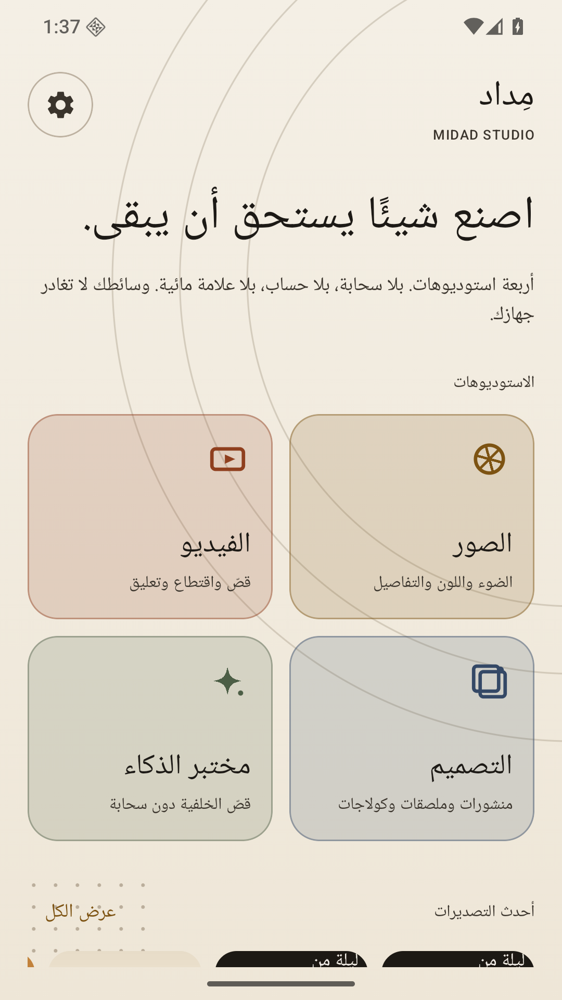
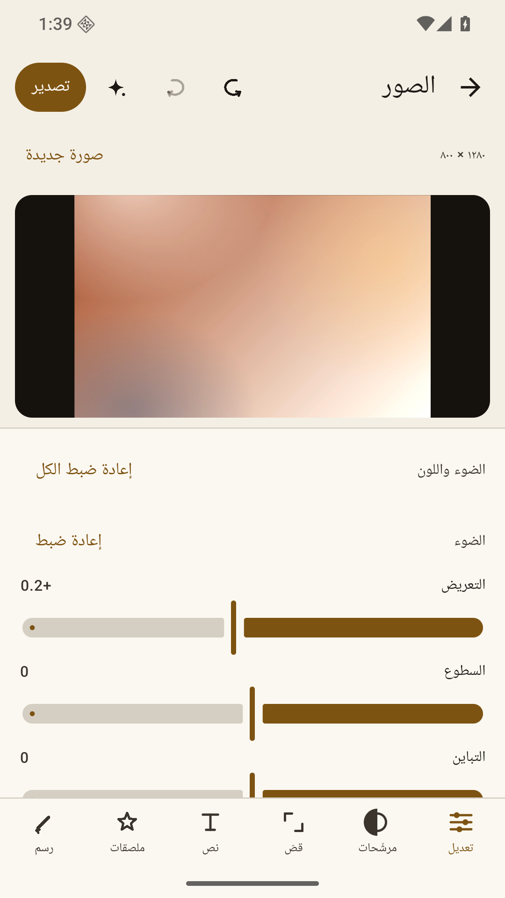
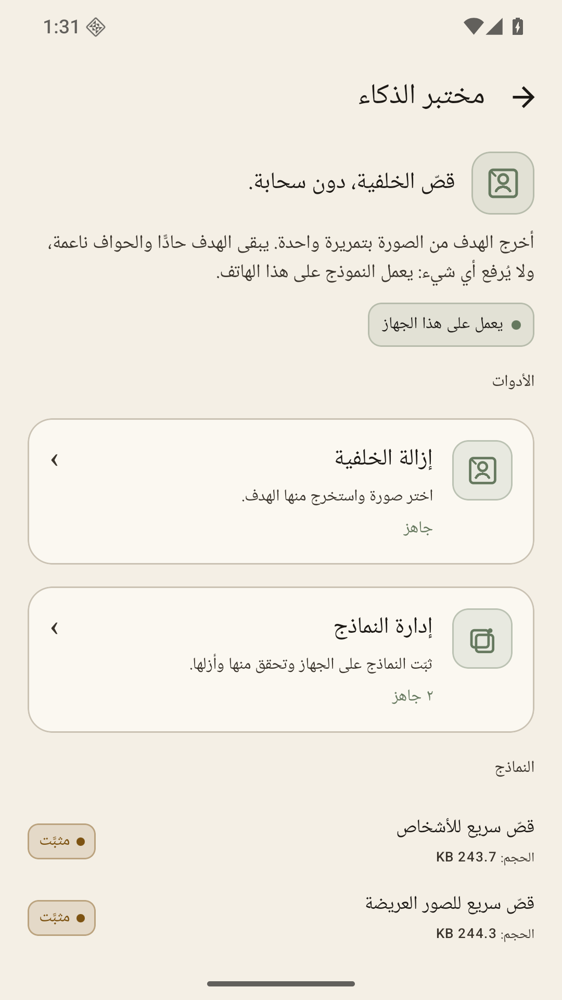
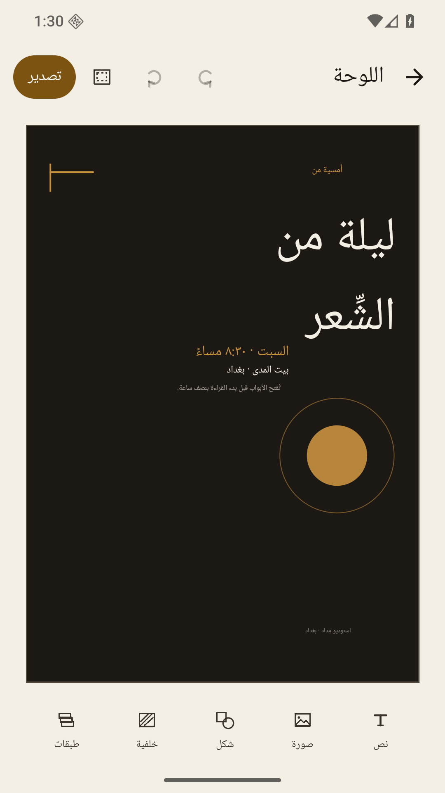
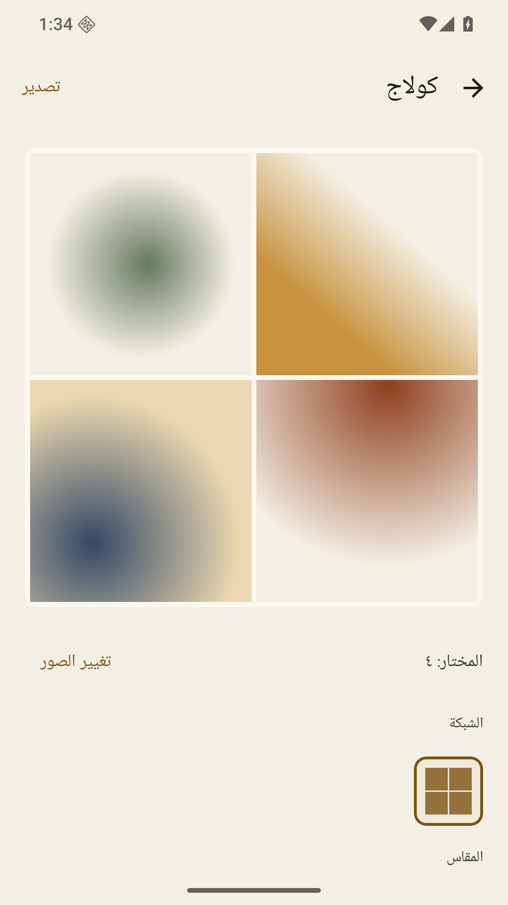
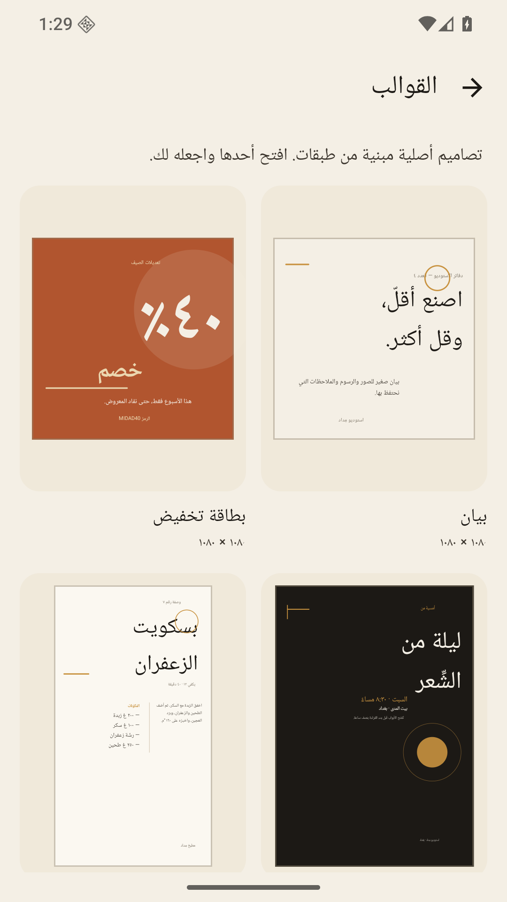
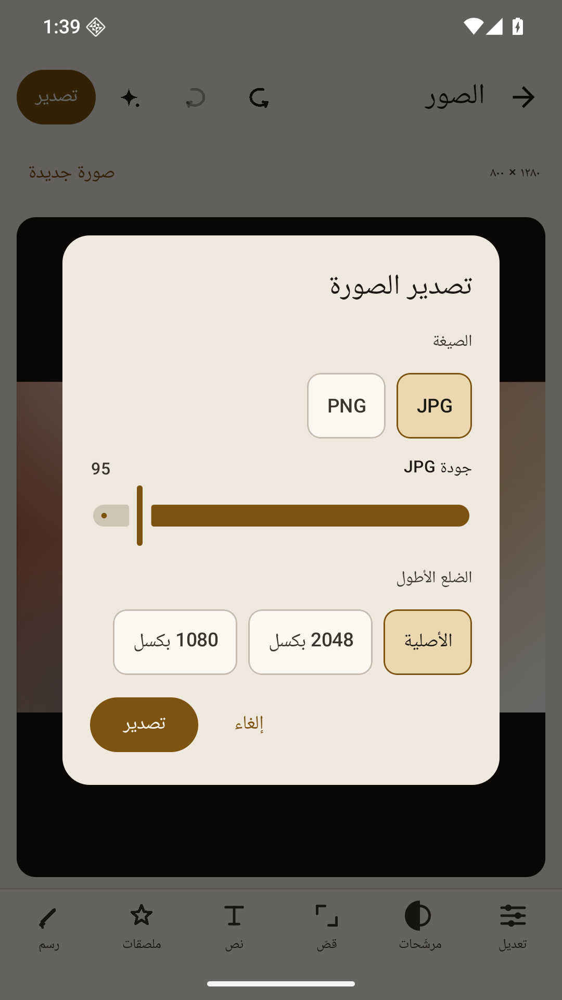
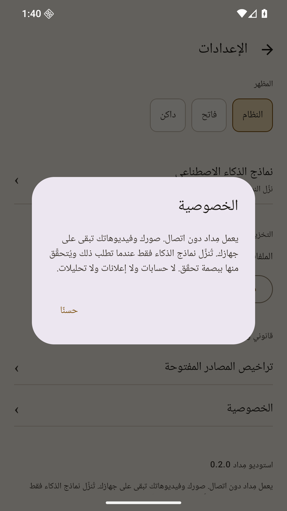

أربعة استوديوهات في تطبيق واحد، خاص بك.
مِداد استوديو إبداعي مجاني يعمل دون إنترنت على أندرويد: محرر صور وتعديلها، صانع كولاج، قوالب تصميم، محرر فيديو، وإزالة الخلفية بالذكاء الاصطناعي على الجهاز — في تطبيق واحد، بلا حساب، بلا إعلانات، وبلا رفع إلى السحابة.
أربعة استوديوهات. بلا حساب، بلا سحابة، بلا علامة مائية.
Four studios. No account, no cloud, no watermark — the line the app opens with.

- الإصدار
- 0.2.3 تجريبي
- البناء
- APK وAAB موقّعان · 22 نوفمبر 2026
- المتجر
- ليس على Google Play بعد
- أندرويد
- 8.0+ (API 26) · الهدف 36
- التحميل
- 21.05 م.ب لملف APK
إصدار تجريبي موقّع، منشور على GitHub Releases فقط. لم يُرسل شيء إلى Google Play أو إلى Play Console. اقرأ ملاحظات الإصدار.
الاستوديوهات في العمل
ثماني شاشات من التطبيق: الرئيسية، وتحرير صورة، ومختبر الذكاء، ومحرر التصميم، وكولاج لأربع صور، ومعرض القوالب، وورقة التصدير، وملخّص الخصوصية.







الشاشات مأخوذة من إصدار 0.2.0 تجريبي باللغة العربية؛ قد تختلف تفاصيل صغيرة في الإصدار 0.2.3. ولا اختبار على أجهزة حقيقية بعد.
أربعة استوديوهات على سطح ورق واحد
تتشارك السمة الورقية نفسها، والتراجع نفسه، والتخزين الخاص نفسه. ابدأ في واحد وأكمل في آخر.
-
استوديو الصور Photo studio
الضوء واللون والتفاصيل، بلا نافذة اشتراك تعترض طريقك.
- التعريض والتباين والإضاءة العالية والظلال وحرارة اللون والتشبّع والتفاصيل
- مظهر أفلام أصلي، وقصّ وتدوير وتعديل استقامة
- نصوص عربية وإنجليزية وملصقات ورسم حر، مع تراجع وإعادة
- تصدير JPEG أو PNG بأبعاد الأصل أو 2048 أو 1080 بكسل — وخيار «الأكبر» محدود بـ3200 بكسل
- وضع الكولاج: تخطيطات وفراغات بين الصور، ويُصدَّر صورة واحدة
-
استوديو التصميم Design studio
لوحة فارغة وسبعة قوالب أصلية بطبقات.
- لوحات منشور وقصة وأفقية وA4 من لوحة فارغة واحدة
- سبعة قوالب أصلية: ملصق مناسبة، وبطاقة وصفة، وملصق منتج، وبطاقة عدّ تنازلي وغيرها
- طبقات للصور والنصوص والأشكال؛ تحريك وتحجيم وتدوير
- تصدير PNG أو JPEG من الاستوديو نفسه
-
استوديو الفيديو Video studio
قصّ وترتيب وعنوان لما يصل إلى خمسة مقاطع — ويُصدَّر على الجهاز.
- حتى 5 مقاطع و3 دقائق لكل مشروع فيديو
- قصّ وإعادة ترتيب ومظهر لوني ونسبة إطار وعنوان
- معاينة كاملة دقيقة عبر نسخة 960 بكسل؛ جودة التصدير كما هي
- تصدير MP4 على الجهاز عبر Media3 — بلا طابور رفع
- لا مكتبة موسيقى ولا استيراد صوت في هذا الإصدار؛ يُحفظ صوت المقطع الأصلي
-
مختبر الذكاء AI Lab
أزل الخلفية أو ضبّبها أو استبدلها دون أن تُغادر الصورة جهازك.
- كتالوج من ستة نماذج: اثنان مضمّنان يعملان دون إنترنت، وأربعة تحميلات اختيارية
- MediaPipe Selfie Segmenter (مربّع وأفقي)، وHair Segmenter، وMulticlass
- DeepLab-V3 للأشياء العامة والحيوانات والمنتجات والمشاهد — لا للوجوه
- MODNet للوجوه فقط، بحواف شعر ناعمة
- التحميلات عبر HTTPS وتُتحقق بـ SHA-256 قبل الاستخدام
مشاريع ونتائج تبقى في مكانها
احفظ مشروع صورة أو تصميم أو قصّ أو فيديو، وأعد فتحه، وأعد تسميته أو احذفه. تعيش المشاريع في تخزين التطبيق الخاص — لا تُصدَّر ولا تُزامَن ولا تُنقل. بعد كل تصدير تظهر بطاقة النتيجة بمعاينة واسم الملف ومكان الحفظ و«فتح» و«مشاركة» و«إغلاق».
الحدود بصراحة: التصدير مسطّح، فلا تُحفظ بيانات EXIF من الكاميرا ولا ملف تعريف اللون الأصلي؛ وخيار «الأكبر» محدود بـ3200 بكسل؛ ومشاريع الفيديو تتوقف عند 3 دقائق أو 5 مقاطع؛ ولا مزامنة سحابية ولا تصدير ملف مشروع ولا نقل مشروع بين الأجهزة.
إذن واحد. بلا حساب. بلا قياس.
يعلن مِداد عن إذن أندرويد واحد فقط، ويستخدمه لشيء واحد: تنزيل نموذج ذكاء اصطناعي اختياري عندما تطلب أنت. لا حساب لإنشائه، ولا إعلان لمشاهدته، ولا حزمة تحليلات أو تقارير أعطال داخل التطبيق.
android.permission.INTERNET لتنزيلات النماذج الاختيارية فقط
ما لا يحدث أبدًا
- لا حساب ولا تسجيل دخول
- لا إعلانات ولا معرّف إعلاني
- لا تحليلات ولا قياس استخدام ولا تسجيل جلسات
- لا حزمة تقارير أعطال
- لا علامة مائية على أي شيء تصنعه
- لا مزامنة سحابية
- لا رفع لوسائطك
- لا إذن كاميرا أو ميكروفون أو موقع أو جهات اتصال أو نفاذ شامل لمكتبة الصور
ما يبقى على هاتفك
- الصور والفيديوهات التي تحررها، تُقرأ عبر منتقي صور أندرويد
- سجلات المشاريع ومصغّراتها في تخزين التطبيق الخاص
- التصديرات في معرضك كملفات عادية
- النماذج المنزّلة، تُتحقق بـ SHA-256 قبل الاستخدام
- النسخ الاحتياطي ونقل الجهاز في أندرويد: معطّلان
نماذج الذكاء الاصطناعي وتراخيصها
إزالة الخلفية تعمل على الجهاز. نموذجان صغيران مضمّنان داخل التطبيق ليعمل دون إنترنت من لحظة التثبيت، وأربعة أكبر تحميلات اختيارية، ولكل منها SHA-256 منشور في بيان التطبيق.
| النموذج | ما يفعله | طريقة التوفير | الحجم | الترخيص |
|---|---|---|---|---|
| Selfie Segmenter MediaPipe · مربّع · 256×256 | قناع الشخص/الخلفية للقصّ والضبابية والاستبدال | مضمّن | 243.7 ك.ب | Apache-2.0 |
| Selfie Segmenter MediaPipe · أفقي · 256×144 | القناع نفسه للإطارات الأفقية | مضمّن | 244.3 ك.ب | Apache-2.0 |
| Selfie Multiclass MediaPipe · 256×256 | قصّ بورتريه من ست فئات يحافظ على حواف الشعر | تحميل | 15.6 م.ب | Apache-2.0 |
| Hair Segmenter MediaPipe · 512×512 | حواف الشعر للضبابية وإعادة التلوين | تحميل | 763.3 ك.ب | Apache-2.0 |
| DeepLab-V3 MediaPipe · 257×257 | أشياء عامة وحيوانات ومنتجات ومشاهد — لا وجوه | تحميل | 2.7 م.ب | Apache-2.0 |
| MODNet تحويل LiteRT · 512×512 | للوجوه فقط، بقناع شعر ناعم | تحميل | 25.0 م.ب | Apache-2.0 |
النماذج الستة كلها Apache-2.0. وكذلك حزم التطبيق المشحونة — LiteRT 2.3.2 وMedia3 وKotlin وJetpack Compose وAndroidX — كلها Apache-2.0، والإشعار الكامل يسافر داخل ملف APK.
وتظهر النماذج الستة نفسها في التطبيق بأسماء أقصر: Fast portrait cutout وFast cutout for wide photos وDetailed portrait cutout وHair-only cutout وGeneral objects (DeepLab) وSoft portrait matting (MODNet).
أما كود مِداد نفسه فمتاح للقراءة مع حفظ الحقوق: اقرأ الترخيص، وإشعارات الأطراف الثالثة، ومصفوفة تراخيص النماذج.
مبني ومُختبَر وموقّع — وبصراحة عن المتبقي
اجتازت بوابة الإصدار بناء 0.2.3 النهائي. هذه أرقام تقرير البناء، لا نصوص تسويقية.
- اختبارات الوحدة
- 94 اختبارًا من JVM وRobolectric في 20 حزمة، بلا فشل
- الاختبارات الآلية
- 10/10 ناجحة — 5/5 على محاكيين اثنين بنظام API 36
- Lint
- 0 أخطاء — 62 تحذيرًا و3 ملاحظات، روجعت كلها
- بوابة الإصدار
- PASSED — tools/release-check.ps1 على الزوج الموقّع النهائي
- المكتبات الأصلية
- 9 مكتبات، مُحاذاة ELF بـ16 ك.ب
- التصغير
- 1 ملف classes.dex مصغّر؛ وخريطة R8 مُنتجة
إصدار موقّع · versionCode 5 · بُني في 22 نوفمبر 2026، 18:34 UTC · APK بحجم 22,072,532 بايت (21.05 م.ب) · AAB بحجم 15,480,566 بايت
SHA-256 لملف APK AA7674D51EB1A966A9714B14DFEA635DB8DA079D88E84E159FE70D8B4D2FA76D
حدود معروفة، بصراحة. لا اختبار على أجهزة حقيقية بعد — كان القبول على محاكيات (API 26 و28 و29 و36). التصدير مسطّح فلا تُحفظ بيانات EXIF من الكاميرا ولا ملف تعريف اللون الأصلي. مشاريع الفيديو محدودة بخمسة مقاطع و3 دقائق، مع نسخة معاينة 960 بكسل. لا مزامنة سحابية ولا تصدير ملف مشروع ولا نقل مشاريع بين الأجهزة. ليس على Google Play بعد، ولم يُرسل شيء إلى Play Console.
أسئلة بإجابات
لأي شيء آخر، متتبّع المشكلات هو قناة الدعم.
هل مِداد مجاني؟
نعم. تنزيل مِداد 0.2.3 واستخدامه مجاني. لا حساب ولا إعلان ولا علامة مائية.
من أين أحمّله؟
من GitHub Releases: ملف APK الموقّع للإصدار v0.2.3. مِداد ليس على Google Play بعد — هذا إصدار تجريبي يُثبَّت يدويًا، ولم يُرسل شيء إلى Play Console.
هل يحتاج اتصالًا بالإنترنت؟
لا، ليس للتحرير. كل الاستوديوهات تعمل دون إنترنت. الطلب الشبكي الوحيد هو تنزيل اختياري لنموذج ذكاء اصطناعي تبدأه أنت؛ يستخدم HTTPS ويُتحقق من الملف بـ SHA-256 المنشور قبل استخدامه.
ما الأذونات المطلوبة؟
إذن واحد: android.permission.INTERNET، ويُستخدم فقط لتنزيلات النماذج الاختيارية. لا يطلب التطبيق كاميرا ولا ميكروفونًا ولا موقعًا ولا جهات اتصال ولا نفاذًا شاملًا لمكتبة الصور؛ تُختار الوسائط عبر منتقي صور أندرويد.
ماذا يحدث لصوري ومشاريعي؟
تبقى على هاتفك. التحرير يجري على الجهاز، والمشاريع في تخزين التطبيق الخاص، والنسخ الاحتياطي ونقل الجهاز في أندرويد معطّلان. لا مزامنة سحابية ولا يُرفع شيء إلى المطوّر.
ما إصدارات أندرويد المدعومة؟
أندرويد 8.0 (API 26) وأحدث. بناء 0.2.3 يستهدف أندرويد 16 (API 36)، ومُصغّر بـR8، ويتضمن ملفات تعريف أساسية (baseline profiles).
ما حدود التصدير والفيديو؟
مشاريع الفيديو محدودة بخمسة مقاطع و3 دقائق، بمعاينة عبر نسخة 960 بكسل وتصدير MP4 على الجهاز. تصدير الصور والتصاميم JPEG أو PNG وأطول ضلع بالأصل أو 2048 أو 1080 بكسل — وخيار «الأكبر» محدود بـ3200 بكسل. التصدير مسطّح، فلا تُحفظ بيانات EXIF من الكاميرا ولا ملف تعريف اللون الأصلي. لا مكتبة موسيقى ولا استيراد صوت في هذا الإصدار.
هل الكود مفتوح المصدر؟
الكود منشور للقراءة، لكن الترخيص «جميع الحقوق محفوظة» — متاح المصدر وليس مفتوح المصدر. المكتبات والنماذج الخارجية تحتفظ بتراخيصها، وأكثرها Apache-2.0.
هل يعمل بالعربية؟
نعم. العربية هي لغة التطبيق الأساسية بواجهة كاملة من اليمين إلى اليسار؛ والإنجليزية مضمّنة أيضًا، وهذا الموقع يعكس الاتجاهين.
حمّل مِداد 0.2.3
ملف APK الموقّع، 21.05 م.ب، بُني في 22 نوفمبر 2026. مجاني، إصدار تجريبي، منشور على GitHub Releases — لا على Google Play.